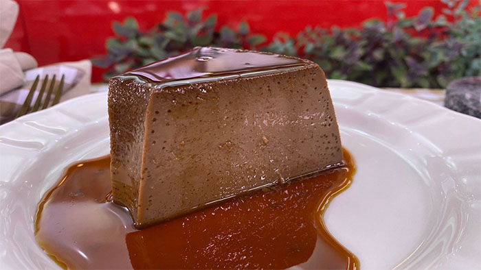
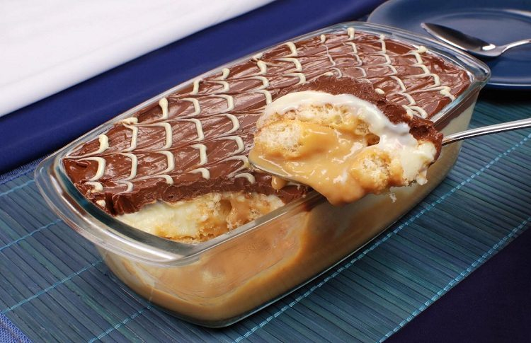
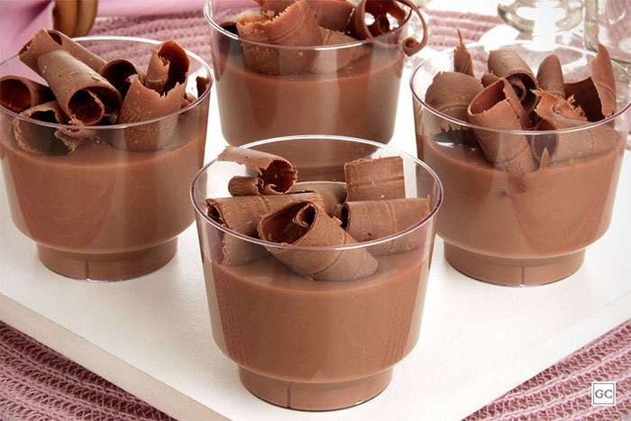
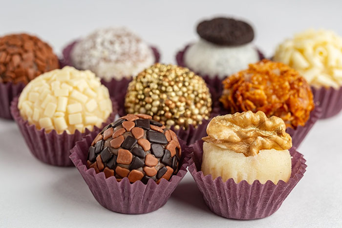
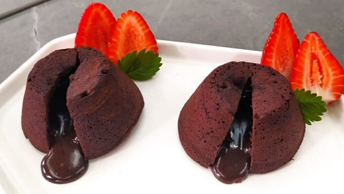
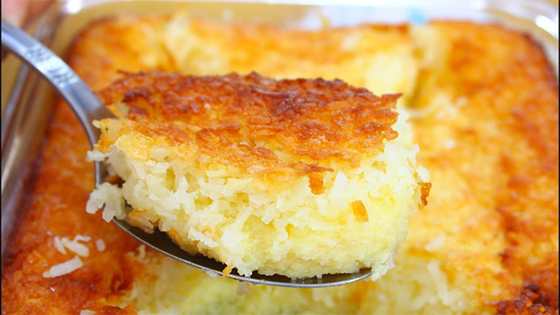

Está pensando em fazer uma sobremesa especial para a família? Ou então bateu a vontade de comer um docinho no meio da tarde? Ana Maria Braga tem uma lista extensa de doces e sobremesas simples e fáceis ensinadas no Mais Você para agradar a todos os paladares. Confira e prepare em casa!
Pudim de leite condensado
O pudim de leite condensando é uma sobremesa clássica e queridinha dos brasileiros. A receita da Ana Maria Braga é fácil de preparar e leva apenas 4 ingredientes.

Pudim de café
Duas paixões nacionais em uma única receita. O pudim de café é uma sobremesa perfeita para quem gosta de sabor marcante.
Pavê básico com doce de leite
Nunca preparou um pavê na vida? Não tem problema! A receita de pavê básico da Ana Maria Braga não tem erros. Você pode usá-lo de base para diversas coberturas e recheios.
Mousse de chocolate com 3 ingredientes
Chocolate meio amargo, leite condensado e creme de leite são os únicos ingredientes que você precisa para fazer essa mousse. Simples e fácil.
Brigadeirão gourmet
O brigadeirão gourmet da Ana Maria é uma sugestão para servir para a família toda. A receita tem apenas 4 ingredientes e rende vários pedaços.
Petit gateau na air fryer
O petit gateau na air fryer é uma opção para quem procura uma sobremesa rápida e prática. Com uma bola de sorvete, fica melhor ainda.
Cocada de forno
Tradição na Festa Junina, a cocada pode ser consumida durante o ano todo. Essa versão do Mais Você é mais prática por ser feita no forno e leva apenas 5 ingredientes.
